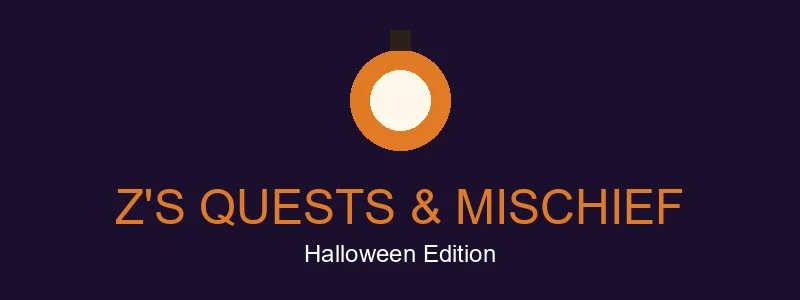
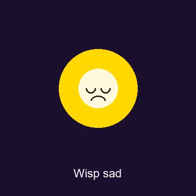
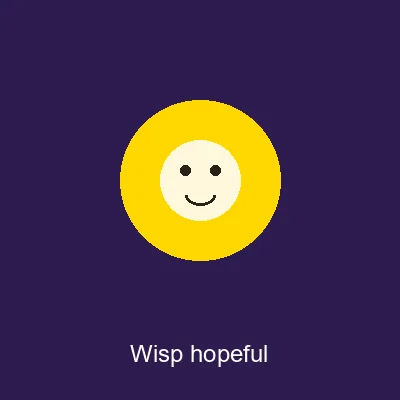
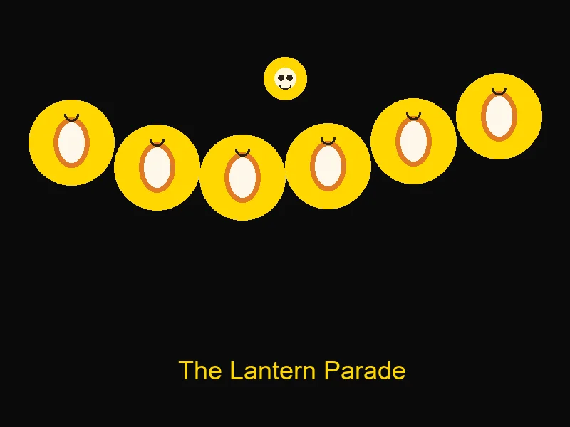

Language selection is experimental. Translation files are available for English, Spanish, French, German, Portuguese, Italian, and Russian, but the interface is not fully translated; many labels and some quest stories, puzzles, and hints may remain in English or the pack's original language.

🏮 Wisp's Lost Lanterns
Wisp the will-o'-the-wisp lost her 6 glow lanterns! Your team are her Lantern Keepers. Find each stop, solve the puzzle, relight the lantern.

📜 A note from the Lab: she escaped again. Bring my lanterns home — and try not to let her outsmart you. She learned from the best. — Dr. Z
One phone per team is plenty. Progress saves on this device.
How creepy do you want it?

🎉 The Lantern Parade!

All 6 lanterns are lit. Wisp can find her way home — and so can you, Lantern Keepers.
"You did it! Every lantern is lit and I can see the whole way home! You're my favorite Keepers ever — don't tell the other Keepers. There are no other Keepers. You're still my favorite!" — Wisp
📜 Lab note: Experiment complete. Six of six lanterns recovered, zero Keepers lost to the graveyard (the pretend one). Wisp has been returned to her jar, where she is already plotting. Same time next year. — Dr. Z
📸 Take your team photo, then show this screen at the finale table for your badge & treat.